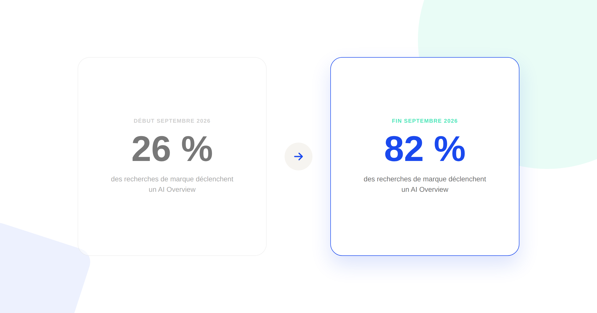
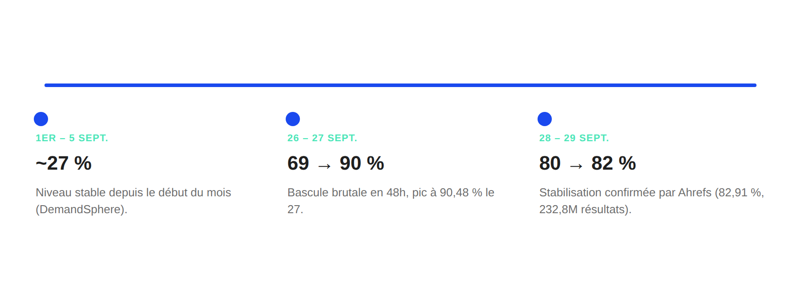

AI Overviews : vos recherches de marque, de 26 % à 82 % en un mois
En septembre 2026, la part des recherches de marque qui déclenchent un AI Overview est passée de 26 % à plus de 82 % en quelques semaines, selon deux analyses indépendantes. Ce n'est plus une tendance de fond à surveiller de loin : c'est un basculement déjà arrivé. Ce qu'il faut vérifier maintenant sur votre propre marque.

Un AI Overview de Google qui apparaît sur un quart des recherches de votre marque, c'est gênant mais gérable. Un AI Overview qui apparaît sur quatre recherches de marque sur cinq, c'est un changement de nature : la page de résultats classique n'est plus le point de contact par défaut entre un internaute et votre marque, le résumé généré par l'IA l'est. C'est exactement ce qui s'est produit en quelques semaines en septembre 2026, et la bascule n'a fait l'objet d'aucune annonce officielle de Google — elle a été mesurée, documentée et recoupée par deux acteurs indépendants de l'écosystème SEO.
Ce que montrent les deux sources
DemandSphere, qui suit quotidiennement l'apparition des AI Overviews sur un panel de mots-clés de marque via sa plateforme DemandMetrics, a mesuré une moyenne de 26,9 % sur la période du 1er au 5 septembre 2026. Le niveau est resté globalement stable (entre 27 % et 35 %) jusqu'à la fin du mois, puis a brutalement décollé : 69,21 % le 26 septembre, un pic à 90,48 % le 27 septembre, puis une stabilisation à 80,23 % et 82,06 % les 28 et 29 septembre.
De son côté, Ahrefs a analysé 232,8 millions de résultats de recherche desktop US sur juillet-septembre 2026 et a mesuré, pour sa part, 82,91 % des mots-clés de marque suivis avec un AI Overview au 29 septembre — un chiffre quasiment identique à celui de DemandSphere, obtenu par une méthodologie complètement différente (crawl à grande échelle plutôt que panel suivi quotidiennement). C'est cette convergence entre deux sources indépendantes, avec des méthodes de mesure distinctes, qui transforme ce qui aurait pu être l'anomalie d'un seul outil en un signal solide.

Ce qu'on sait, et ce qu'on ne sait pas
Important à préciser : Google n'a publié aucun communiqué officiel chiffrant cette hausse. Ce n'est pas une annonce produit, c'est une mesure tierce — ce qui ne la rend pas moins fiable, mais qui change la nature de l'information : on observe un effet, pas une cause confirmée. Les hypothèses les plus plausibles évoquées par les deux études portent sur un déploiement élargi des derniers modèles Gemini dans les AI Overviews et AI Mode, mais aucune des deux sources ne peut l'affirmer avec certitude, et ni l'une ni l'autre n'a prétendu le contraire.
Ce qui est en revanche solidement établi, c'est la mesure elle-même : la méthodologie DemandSphere (panel suivi quotidiennement, toutes régions et appareils confondus) et celle d'Ahrefs (crawl massif sur trois mois) sont publiques et documentées, et elles aboutissent au même ordre de grandeur final à un point d'écart près.
Ce que ça change concrètement pour une recherche de marque
- Être premier résultat organique ne garantit plus le clic. Quand un AI Overview s'affiche au-dessus des résultats classiques sur quatre recherches de marque sur cinq, le premier lien bleu n'est plus le premier point de contact par défaut — le résumé généré par l'IA l'est.
- Être cité dans l'AI Overview devient une métrique à part entière. DemandSphere précise que sa mesure porte sur la présence d'un AI Overview, pas sur le fait que la marque y soit citée comme source — ce sont deux informations différentes, et la seconde est la plus actionnable des deux pour une stratégie de visibilité.
- La discipline GEO n'est plus optionnelle sur les requêtes de marque. Un travail d'optimisation pour être cité par les moteurs de réponse IA, qui pouvait sembler prospectif il y a encore quelques mois, s'applique désormais à la majorité des recherches que les internautes font déjà sur votre propre nom.
Comment vérifier où en est votre propre marque
- Testez manuellement vos 10 à 15 requêtes de marque les plus fréquentes en navigation privée : nom de marque seul, nom de marque + avis, nom de marque + produit ou service phare.
- Notez, pour chacune, deux informations distinctes : un AI Overview apparaît-il, et si oui, votre marque y est-elle citée comme source ?
- Répétez ce relevé chaque semaine, pas une seule fois : la bascule de fin septembre montre qu'une situation stable depuis des semaines peut évoluer en quelques jours.
- Croisez avec votre trafic organique sur ces mêmes requêtes dans Search Console, pour objectiver si l'apparition d'un AI Overview a mesurablement affecté vos clics, plutôt que de le supposer.
FAQ
Est-ce une annonce officielle de Google ?
Non. Google n'a publié aucun chiffre officiel sur cette hausse. La mesure vient de deux analyses tierces indépendantes, DemandSphere et Ahrefs, qui convergent toutes les deux autour de 82 % fin septembre 2026.
Est-ce que ça concerne toutes les recherches, ou seulement les recherches de marque ?
Spécifiquement les recherches de marque (branded queries) — une requête contenant un nom de marque. Le taux d'apparition des AI Overviews sur les requêtes génériques suit une dynamique différente, non couverte par cette mesure.
Que faire en priorité face à ce changement ?
Tester manuellement vos requêtes de marque les plus fréquentes en navigation privée pour voir si un AI Overview apparaît et si votre marque y est citée comme source, pas seulement si vous êtes premier résultat organique. Répéter ce test chaque semaine plutôt qu'une seule fois.
Envie de vérifier votre visibilité dans les AI Overviews ?
Pour aller plus loin, voir la page GEO, la page Audit visibilité IA, et le Baromètre IA & Growth Marketing.
À lire aussi : AI Overviews de Google : l'impact réel sur votre trafic SEO.
Pour continuer sur ce sujet.